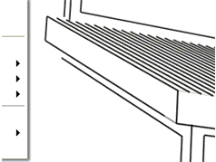

Keeping SketchUp Scenes and Styles in Sync |
|
Create a scene in SketchUp for each view you will need in your LayOut document. This will preserve Styles as well. Note that when scenes in the Styles tab (Window > SketchUp Model) are prefaced by "Modified," they are no longer in sync with the original SketchUp model since they have been modified in LayOut.  |
|